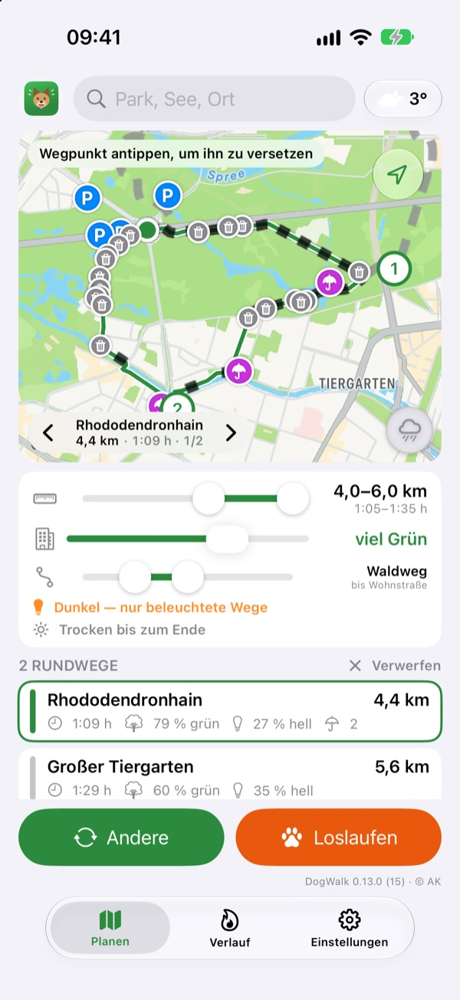
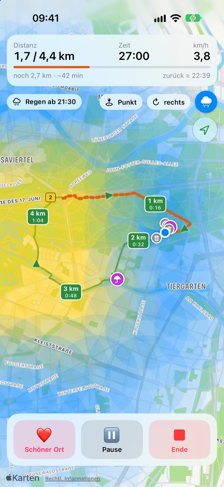
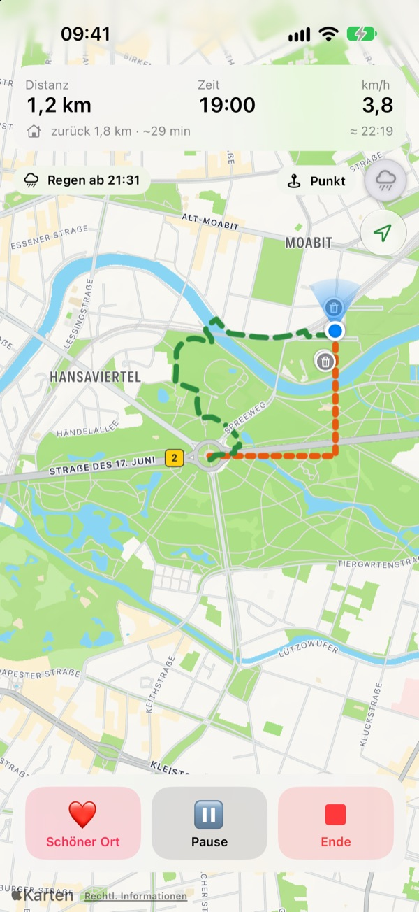
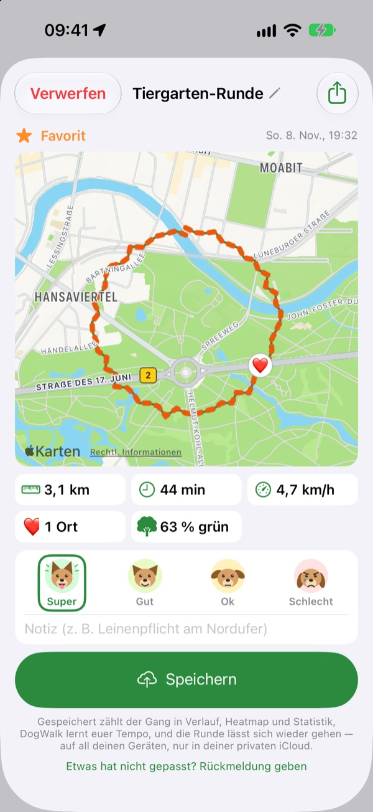
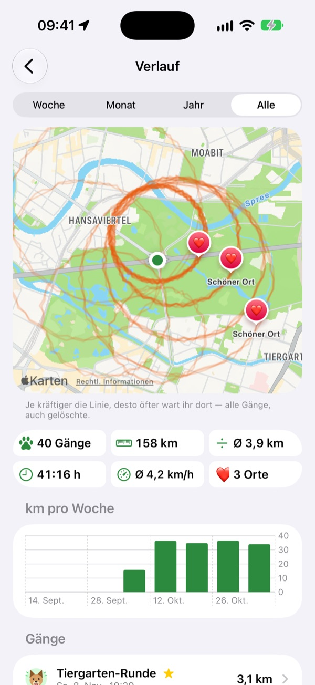
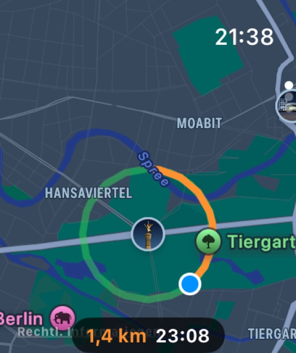

DogWalkPlanner
Gassi-Runden im Grünen — für iPhone und Apple Watch.
Sag, wie lange ihr laufen wollt, und DogWalkPlanner legt eine Runde ab deiner Haustür oder um den nächsten Park oder See: so grün wie möglich, über ruhige Wege, ohne einen Abschnitt doppelt zu laufen. Unterwegs brummt das iPhone vor jeder Abzweigung — du kannst es in der Tasche lassen und auf den Hund achten.
Im App Store laden




Was die App kann
🌳 Runden nach Maß
Nach Länge bis 20 km oder nach Zeit bis 4 Stunden. Grünflächen, Wald und Wasser zuerst, „Andere“ bringt immer neue Vorschläge.
🛤️ Deine Wege
Der Regler „Wege“ reicht vom Trampelpfad bis zur Wohnstraße. Abends auf Wunsch nur beleuchtete Wege.
📳 Brummen vor dem Abbiegen
Dreimal Vibrieren vor jeder Abzweigung, Richtung auf Sperrbildschirm, Dynamic Island und Uhr.
🌧️ Regenradar
Radar und Vorhersage des Deutschen Wetterdienstes, Unterstände an der Strecke.
🏠 Einfach loslaufen
Ohne Plan unterwegs? Der Weg zurück zum Start steht immer auf der Karte — mit Strecke und Gehzeit. Vergessen zu starten? Die App merkt es selbst.
❤️ Schöne Orte
Merk dir Stellen, die euch gefallen — neue Runden führen daran vorbei. Dazu Hundewiesen, Mülleimer, Parkplätze am Start.
🐾 Danach
Bewertung mit Hundegesichtern, Teilen als Bild, eine Heatmap aller eurer Gänge.
🔒 Privat
Kein Konto, keine Werbung, keine Analyse. Deine Gänge bleiben auf deinen Geräten und in deiner iCloud.
Am Handgelenk

Auf der Apple Watch siehst du die nächste Abzweigung, die restliche Strecke und die Zeit. Pause und ❤️ Schöner Ort gehen mit einem Tipp — das iPhone bleibt in der Tasche.
In English
DogWalkPlanner plans green loop walks for you and your dog — from your door or around a park or lake, up to 20 km or 4 hours, over quiet paths and never the same stretch twice. Your iPhone buzzes before every turn, the rain radar warns you in time, and your Apple Watch shows the way. No account, no ads, no tracking. The app is in German; rain data covers Germany.